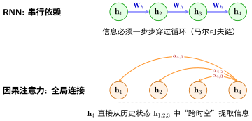

从RNN到注意力：一个思想的跳跃#
循环神经网络：让网络拥有"记忆" 揭示了 RNN 的困境：\(\mathbf{h}_t\) 只能通过 \(\mathbf{h}_{t-1}\) 间接获取前序信息。LSTM：给记忆装上"门" 用门控机制为梯度开辟了高速公路，但信息仍是串行传递的——经过几十个 \(\mathbf{f}_t \odot \mathbf{c}_{t-1}\) 操作后，\(\mathbf{h}_1\) 的信息在 \(\mathbf{c}_{100}\) 中终究会衰减。
关键问题：如果 \(\mathbf{h}_t\) 能直接看到 \(\mathbf{h}_1, \mathbf{h}_2, ..., \mathbf{h}_{t-1}\) 全部历史，而不只是 \(\mathbf{h}_{t-1}\)，会怎么样？
直觉跳跃：从"传话"到"查档案"#
两个处理模式#
RNN的传话模式 |
注意力的查档模式 |
|
|---|---|---|
信息获取 |
只听上一个人说 |
直接查阅所有前序记录 |
信息质量 |
逐次衰减 |
不受距离影响 |
并行性 |
串行，\(t\) 步等 \(t-1\) 步完成 |
所有步骤可同时计算 |
RNN 就像传话游戏：第100个人想知道第10个人说了什么，只能通过中间90个人的转述。每转述一次，信息就损失一点。
注意力的做法完全不同：第100个人能看到所有人的"原始发言记录"，然后自己判断哪些发言对当前理解最重要。
备注
这不是一个全新的想法。归纳偏置（Inductive Bias） 告诉我们，好的架构把对任务结构的理解内置到设计中。RNN 的归纳偏置是"时序因果性"——\(t\) 时刻只能依赖 \(< t\) 的信息。注意力保留了这一偏置，但改变了信息的传递方式：不再通过循环连接一步步传递，而是直接建立全局连接。
如果你学过 ResNet：深层网络的突破，会发现这和残差网络的思想完全一致——用一条捷径绕开衰减路径。ResNet 的跳跃连接让梯度在深度方向绕过非线性层直传；注意力让信息在时间方向绕过中间步骤直达。两者的核心洞察是同一个：不让信号被迫穿过每一次变换，给它一条直接通路。
数学推导：因果注意力的自然诞生#
我们要解决的问题：在时刻 \(t\)，给定所有前序隐状态 \(\{\mathbf{h}_1, \mathbf{h}_2, ..., \mathbf{h}_{t-1}\}\)（以及当前输入的信息），如何计算出当前的最佳表示？
步骤一：衡量"相关性"#
首先需要一个机制来判断哪些前序状态对当前时刻重要。最自然的方式是用相似度：
最简单的相似度是点积：
如果 \(\mathbf{h}_t\) 和 \(\mathbf{h}_i\) 方向相似，点积大；方向相反，点积小（甚至为负）。
步骤二：归一化为权重#
将相似度分数用 Softmax 转为概率分布（权重）：
\(\alpha_{t,i}\) 表示"在理解第 \(t\) 步时，第 \(i\) 步的信息有多重要"。所有权重之和为 1。
步骤三：加权聚合#
用这些权重对前序状态加权求和：
\(\mathbf{c}_t\) 称为 上下文向量（context vector）——它是所有前序信息的"加权摘要"，权重由当前需求动态决定。
这就是因果注意力
"因果"指的是：\(t\) 时刻只能看到过去（\(i < t\)），不能看到未来。这是序列建模的自然约束——你不能用还没说出的话来理解当前词。
步骤四：分离"查询"和"被查询"——引入可学习的投影#
步骤三的公式已经能工作，但有一个微妙的局限。注意 \(\mathbf{h}_t\) 在公式中出现了两次，扮演了两个不同的角色：
作为 “查询方”：\(\mathbf{h}_t \cdot \mathbf{h}_i\) 中的 \(\mathbf{h}_t\) ——“我现在关心什么？”
作为 “被查询方”：\(\mathbf{h}_t \cdot \mathbf{h}_i\) 中的 \(\mathbf{h}_i\) ——“我之前是什么？”
同一个向量被迫同时回答"我在找什么"和"我是什么"——这两个问题的答案可能完全不同。
备注
一个具体的例子：假设 \(\mathbf{h}_5\) 是一个动词"跑"的表示，而 \(\mathbf{h}_2\) 是一个名词"猫"。在计算 \(\mathbf{h}_5\) 应该分配多少注意力给 \(\mathbf{h}_2\) 时：
\(\mathbf{h}_5\) 作为 查询方：最关心的是"谁在做动作"——它想找主语
\(\mathbf{h}_2\) 作为 被查询方：需要暴露自己是"名词、生物、可以做主语"的信息
如果 \(\mathbf{h}_2\) 必须同时"体现自己的完整语义"（作为 \(\mathbf{h}_{t}\) 传给下一步）和"把自己的主语属性暴露出来供查询"（作为 Key），这两个目标会互相拉扯——表达力受限。
解决方案很自然：给每个向量三个可学习的投影，让它能根据"当前扮演什么角色"来调整自己的表达 [VSP+17]：
Query \(\mathbf{q}_t = \mathbf{W}_q \mathbf{h}_t\)（查询）：“作为查询方，我在找什么？”——从当前时刻出发的检索需求
Key \(\mathbf{k}_i = \mathbf{W}_k \mathbf{h}_i\)（键）：“作为被查询方，我是什么？”——暴露自己供别人检索的特征
Value \(\mathbf{v}_i = \mathbf{W}_v \mathbf{h}_i\)（值）：“不管谁来查，我有什么信息可以提供？”——实际被聚合的内容
备注
\(\mathbf{W}_q, \mathbf{W}_k, \mathbf{W}_v\) 是可学习的参数矩阵（就像 全连接神经网络 中的全连接层权重），形状均为 \(d \times d\)。网络通过训练自主学会：什么样的投影适合做 Query？什么样的投影适合做 Key？什么样的投影适合做 Value？
对比步骤三的原始公式和推广后的公式：
原始（\(\mathbf{h}_t\) 身兼两职）：
推广后（Q/K/V 三个角色）：
即：
可以看到：如果 \(\mathbf{W}_q = \mathbf{W}_k = \mathbf{W}_v = \mathbf{I}\)（单位矩阵），三式完全等价——步骤三的简单版本是步骤四的一个特例。
备注
为什么除以 \(\sqrt{d_k}\)？
当 Key 的维度 \(d_k\) 很大时，点积 \(\mathbf{q} \cdot \mathbf{k}\) 的方差约为 \(d_k\)。大点积值会让 Softmax 进入饱和区——大部分 \(\alpha\) 趋近于 0 或 1，梯度几乎为 0。除以 \(\sqrt{d_k}\) 将方差缩放到 1，保持 Softmax 输出平滑、梯度健康。这被称为缩放点积注意力（Scaled Dot-Product Attention）。
类比：图书馆检索
Query：你要找的问题（“关于深度学习的书”）
Key：每本书的索引标签（书名、关键词）
Value：书的内容
过程：用 Query 匹配 Key 得到每本书的相关性分数 → Softmax 归一化 → 基于权重从各书的 Value 中聚合信息
你最终得到的是所有相关书的"加权摘要"，而非一本书的全部内容。
对比：RNN串行 vs 注意力并行#

RNN的串行依赖 vs 注意力的全局连接
对比维度 |
RNN |
因果注意力 |
|---|---|---|
信息路径长度 |
O(n)：n步才能从位置1传到位置n |
O(1)：任何位置直接访问所有前序位置 |
梯度路径 |
穿过n个Jacobian，指数衰减 |
梯度主要通过Softmax传播，与距离无关 |
并行性 |
必须串行：\(\mathbf{h}_t\) 依赖 \(\mathbf{h}_{t-1}\) |
训练时所有位置可并行计算（用mask屏蔽未来） |
归纳偏置 |
强：相邻时刻更相关 |
弱：所有前序位置等距（需要位置编码补偿） |
代码实践：因果注意力的实现#
import torch
import torch.nn.functional as F
def causal_self_attention(x):
"""
输入: x, shape (batch, seq_len, d_model)
输出: context, shape (batch, seq_len, d_model)
理论对应 {ref}`from-rnn-to-attention` 中的因果注意力公式
"""
B, T, D = x.shape
# 步骤1: 线性投影得到 Q, K, V
# 三者形状均为 (batch, seq_len, d_model)
W_q = torch.randn(D, D) * 0.02 # 实际应用中应为可学习参数
W_k = torch.randn(D, D) * 0.02
W_v = torch.randn(D, D) * 0.02
Q = x @ W_q # (B, T, D)
K = x @ W_k # (B, T, D)
V = x @ W_v # (B, T, D)
# 步骤2: 计算注意力分数矩阵
# Q @ K^T 的结果形状为 (B, T, T)
# scores[b, t, i] 表示第t个位置的查询与第i个键的相似度
d_k = D
scores = (Q @ K.transpose(-2, -1)) / (d_k ** 0.5)
# 步骤3: 因果mask——禁止关注未来
# mask是一个上三角为 -inf、下三角为 0 的矩阵
mask = torch.triu(torch.ones(T, T), diagonal=1).bool()
scores = scores.masked_fill(mask, float('-inf'))
# 步骤4: Softmax归一化（在最后一个维度上，即所有Key上）
# -inf 位置的 exp(-inf) = 0，实现"禁止关注未来"
attn_weights = F.softmax(scores, dim=-1) # (B, T, T)
# 步骤5: 加权聚合Value
# attn_weights[b, t, :] 对 V[b, :, :] 的所有行加权求和
context = attn_weights @ V # (B, T, D)
return context
# 测试
x = torch.randn(2, 5, 64) # batch=2, seq_len=5, d_model=64
output = causal_self_attention(x)
# output[0, 2, :] 只聚合了 x[0, 0:3, :] 的信息（位置0,1,2）
# output[0, 2, :] 看不到 x[0, 3:5, :]（位置3,4是"未来"）
备注
因果mask的直觉：在Softmax前将未来位置的分数设为 \(-\infty\)，因为 \(\exp(-\infty) = 0\)，这些位置获得0权重。这与 归纳偏置（Inductive Bias） 中时序因果性的要求一致——\(t\) 时刻的预测只能基于 \(< t\) 的信息。
本节小结
RNN 的串行传话模式导致长程信息丢失，根本原因是信息必须一步步穿过循环连接
注意力的核心思想：让每一步直接加权聚合所有前序信息，跳过中间步骤
因果注意力 = 相似度计算（点积/缩放点积）→ Softmax归一化 → 加权求和
引入 Q/K/V 三个角色将"查询"和"被查询"的职能分离，增强表达力
注意力训练时可并行（用mask屏蔽未来），这是相对于RNN的巨大优势
从"为什么需要注意力"到"注意力如何工作"，我们已经完成了核心的思想建设。下一节 Transformer：注意力的极致 中，我们将看到这一思想如何被推向极致——完全抛弃循环，构建一个纯粹的注意力架构。
参考文献#
Ashish Vaswani, Noam Shazeer, Niki Parmar, Jakob Uszkoreit, Llion Jones, Aidan N Gomez, Łukasz Kaiser, and Illia Polosukhin. Attention is all you need. In Advances in Neural Information Processing Systems (NeurIPS), volume 30. 2017.
贡献者与修订历史
查看详细修订记录
-
8eb32752026-05-09 - Heyan Zhu: feat(sequence-modeling): add new chapter on sequence modeling from RNN to Mamba